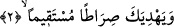
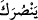

2. Ki Allah, senin geçmiş ve gelecek günahını bağışlasın (bütün tasalarını
gidersin) ve sana olan nimetini tamamlasın ve seni doğru bir yola iletsin.
“Ki Allah” fetih sebebiyle “seni bağışlasın.” Çünkü bu bağışlama; Peygamber
(s.a.)’in harp zorlukları ve karşılaştığı çeşitli sıkıntılara tahammül ederek Allah’ın
kelimesini/kelime-i tevhidini fetih sûretiyle en üstün kılmasına binaendir. Bazıları;
“mağfiret” kelimesinin getirilmesine rağmen fethin sebep yönünün belirtilmemesini,
fethin sebeplerini mecâz-ı mürsel ile gösterilmiş olmasına bağlamışlardır. Fetih,
bağışlanmaya sebep olan fiilleri zorunlu kılan bir gerekçedir. Mağfiret ise bu fiillere
sevkedici bir sebebtir. İşte bu sebeple mağfiretin, bu fiillere lâzım gelen şeye illet
olarak konulması uygun olmuştur.
Zemahşerî Mekke’nin fethini mağfiret sebebi olarak göstermiştir ki bu Ehl-i sünnete
en uygun olan görüştür. Zira onlara göre Allah Teâlâ’nın fiillerinin çeşitli maksadlara
dayandırılma zorunluluğu yoktur.
Müfti Sa’dî’nin Havâşî’sinde belirtildiği üzere Zemahşerî gibi mâlüllük yönüne
bakan kimse de kınanmaz. Çünkü bunun doğru olduğu da ortaya çıkmıştır. Önceki âyette
“Biz” ifâdesi kullanılırken bu âyette bütün sıfatların kendisine bağlı olduğu zât (Allah)
ismine dönülmesi (iltifât) şunu hissettirmek içindir. Allah Teâlâ’nın fillerinden bir
gayeye dayanan her bir fiili biri diğerinden farklı bir haysiyette, farklı bir itibarla
keyfiyette sâdır olmaktadır. Bu da O’nun sıfatlarından bir sıfat üzere tertib olunmuştur.
Şeyhzâde der ki: “ ve “ ifâdelerinde fâilin açıkça belirtilmesi mağfiret
ve yardımın her birinin ulûhiyyetten kaynaklandığını ve Allah’ın hak mâbud olduğunu
hissettirmek içindir. Mağfiret, günahları örtmek ve yok etmektir.
Büyüklerden biri şöyle demiştir: “Âriflere göre bağışlanma cezâlandırılmadan daha
tehlikelidir. Çünkü cezâlandırılma, hakkını verme, ödeşmedir. Kişi cezâsından sonra
kendini rahata sevkeder. O kişi sanki, hakkını tam olarak alan kişi mesâbesindedir.
Fakat bağışlanma böyle değildir. Sen bilirsin ki Allah Teâlâ sana yönelmiş, seni
görmekte ve karşılığını istemeksizin seni nimetlendirmektedir. Bu yüzden O’na karşı
devamlı mahcûbiyet ve utangançlık içinde olursun. İşte bu yüzden Allah Teâlâ kulunun
günahını affettiği zaman bu affı, o kişi ile Allah’ı tefekkürü arasına girer ve o kişiye
Allah’ı unutturur. Halbuki o kişi Allah’ı unutmayıp tefekkürüne devam edebilse yine
utanacak, mahcûbiyet içerisinde kalacaktır. Nefislere, utançtan daha büyük bir azap
yoktur. Hatta utanç içerisinde olan kimse hiç dünyaya gelmemiş olmayı bile ister.
Nitekim faziletli Meryem annemiz dâhi:
“... Keşke dedi, bundan önce ölseydim, unutulup gitseydim!” (Meryem, 19/23). Bu
hayânın, mahluklara karşı olanıdır. Ya kulun yapılmaması emrolunan şeyleri yapması